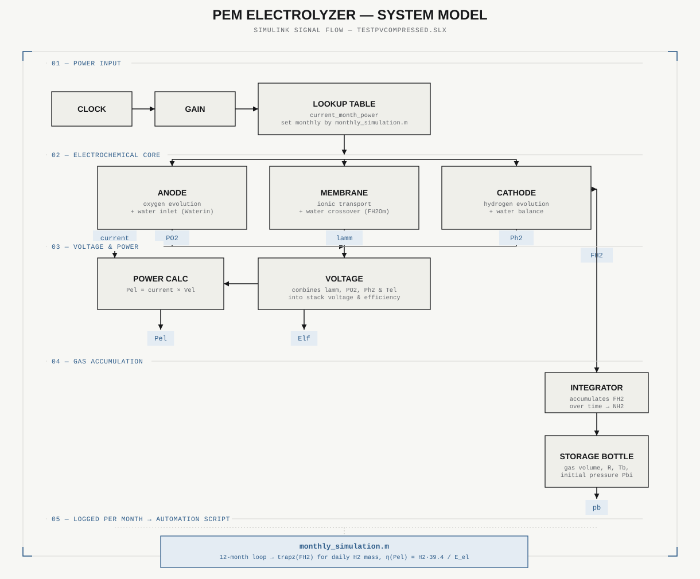
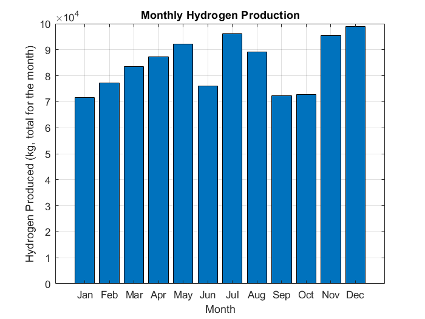
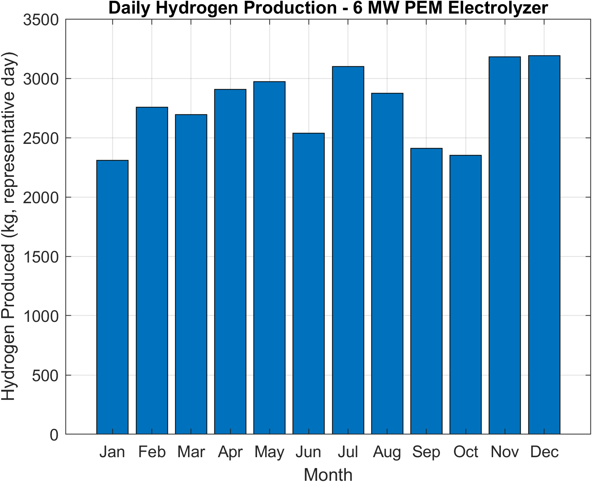
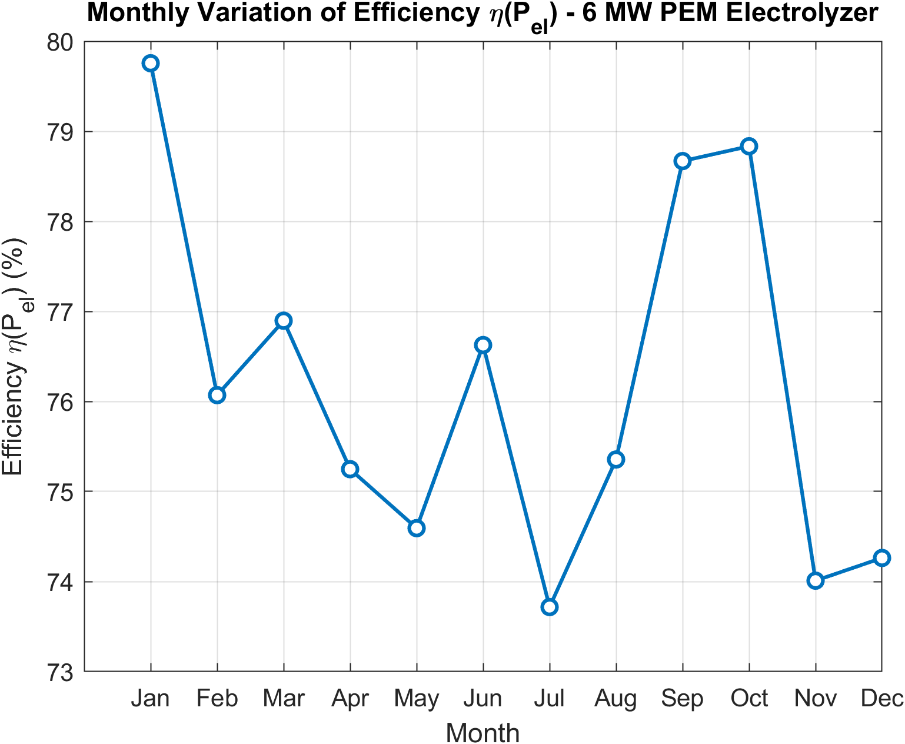

6 MW PEM Electrolyzer Modelling & Simulation
Final-year project: a hybrid renewable energy system simulation for green hydrogen production.
- MATLAB/Simulink
- Green Hydrogen Production
- Renewable Energy
- System Modelling & Simulation
Simulated a 6 MW PEM electrolyzer powered by a hybrid renewable source combining 2 MW of solar PV and 8 MW of wind power into a 10 MW supply. Built a monthly automation script that imports real weather data via CSV and runs 12 full simulations across the year, using a time-compression strategy (1,000 simulated seconds representing a 24-hour day) with a validated correction factor for hydrogen flow integration. Power output is split between the solar and wind sources via global annual peak normalization, and hydrogen mass output is calculated by integrating molar flow over time. System efficiency is computed from hydrogen output energy against electrical energy input.
Objective




Internship context
Completed as part of a mechanical engineering internship at CNR-ITAE (Istituto di Tecnologie Avanzate per l'Energia) in Messina, Italy, under the INTERREG NEXT Italie-Tunisie project. Supervised by Mr Foued Mzali and Mr Giovanni Brunaccini.